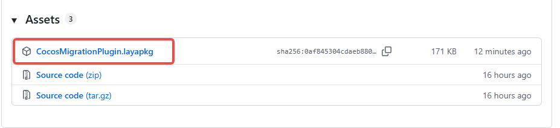
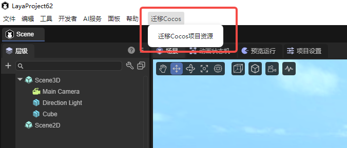

Cocos资源导出插件
一、关于插件
随着LayaAir引擎的不断发展，越来越多的开发者选择了LayaAir引擎来开发游戏。一部分开发者已经使用Cocos引擎开发了一部分游戏内容，但希望更换引擎继续进行开发。Cocos资源导出插件是一款用于将 Cocos Creator 项目资源迁移到 LayaAir 的LayaAir插件。插件通过扫描 Cocos 工程中的资源与 meta 文件，把支持的资源类型转换为 Laya 的资源格式，并自动处理常见组件（UI、网格、灯光、相机、碰撞体、刚体、动画等）。
二、使用基础
插件下载地址：https://github.com/layabox/CocosMigrationPlugin/releases

环境要求：
LayaAir 版本：3.3.6或以上版本。
Cocos 版本：已知支持 Cocos Creator 3.x 系列，理论上也支持2.x系列。
三、使用方法
1.下载资源包，并通过IDE的导入资源包功能将插件导入到项目中。具体流程可以参考包管理器与资源包导入说明中的第二节。
2.导入资源包后，主菜单会新增一个选项：迁移Cocos / 迁移Cocos项目资源

3.点击这个选项，会弹出两次对话框：
第一个对话框：选择 源 Cocos 资源目录（通常是 Cocos 工程下的
assets目录，也可以是其子目录）第二个对话框：选择 目标 Laya 资源目录（必须是当前 Laya 工程
assets目录中的某个子目录）
4.等待转换完成，开发者可以查看控制台输出以了解迁移进度及可能的警告。
四、已知局限与注意事项
1.插件只会转换已在 core/Registry.ts 中注册的扩展名，其它类型会被忽略或打印警告。已经支持的资源类型有：
- 图片资源：png， jpg，jpeg，hdr
- 模型资源：fbx，gltf，glb，obj
- 着色器资源：effect
- 材质资源：mtl
- 动画资源： animgraph，anim
- 预制体和场景：prefab， scene
2.某些 Cocos 特有的组件/材质参数在 Laya 中可能没有一一对应映射，需手动调整。
3.不支持转换自定义的Effect。
4.物理参数（质量、摩擦、弹性等）与引擎实现差异可能导致运行效果与原项目不完全一致
五、拓展与二次开发
Cocos资源导出插件是一个开源项目，开发者可以根据自己的需求，自行拓展插件。
1.新增资源转换：
- 在
core/assets中新增一个实现ICocosAssetConversion接口的转换类 - 在
core/Registry.ts的ConversionRegistry中注册扩展名与转换类映射
2.新增/修改组件转换：
- 在
core/components下新增或修改对应组件转换文件